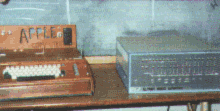
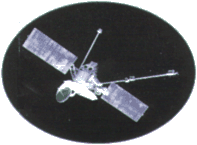
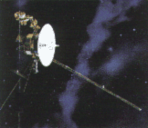

| |
|
1970
 Kömür,
petrol gibi fosil yakýtlarýn kullanýlmaya baþlamasýndan
sonra gösterilen ilginin azaldýðý rüzgar enerjisi
yeniden gündeme geldi. Tüm dünyada fosil yakýt
rezervlerinin sýnýrlý ve gittikçe tükeniyor olmasý
buna seçenek oluþturacak enerji kaynaklarý bulmayý
gerektiriyordu. Binlerce yýldýr insanlýðýn mekanik
amaçlarla kullandýðý rüzgar enerjisi artýk enerji üretmek
için de kullanýlmaya baþlýyordu. Kömür,
petrol gibi fosil yakýtlarýn kullanýlmaya baþlamasýndan
sonra gösterilen ilginin azaldýðý rüzgar enerjisi
yeniden gündeme geldi. Tüm dünyada fosil yakýt
rezervlerinin sýnýrlý ve gittikçe tükeniyor olmasý
buna seçenek oluþturacak enerji kaynaklarý bulmayý
gerektiriyordu. Binlerce yýldýr insanlýðýn mekanik
amaçlarla kullandýðý rüzgar enerjisi artýk enerji üretmek
için de kullanýlmaya baþlýyordu.
|
| 1972
@
Elektronik posta
(e-mail) geliþtirildi.
|
| 1973
Ýlk
mikrobilgisayar üretildi. Önceki bilgisayarlara göre
daha küçük olduðu, tek bir kullanýcýya hizmet verdiði
için bu bilgisayarlara mikrobilgisayar adý verilmiþti.
Fransýz R2E þirketi tarafýndan piyasaya sürülen bu
mikrobilgisayarýn adý Micral'di.
|
| 1975
Apple-1
bilgisayarlar piyasada. Apple Inc. firmasýndan Steve
Woznaik ve Steve Jobs'un
tasarladýðý

Apple-1, 1976'dan itibaren insanlar tarafýndan
benimsenerek önemli bir ticari baþarý saðladý. |
| 1978
Ýlk
tüp bebek dünyaya geldi.
Ýngiltere'de
yapay dölleme sonucu hamile kalan bir kadýn doðum yaptý.
Bu tarihten sonra yapay dölleme yoluyla doðan tüm çocuklara
tüp bebek denmeye baþlandý. |
| 1981
IBM
PC (Personal Computer) kiþisel bilgisayarlar piyasada.
Mikrobilgisayarlarýn gündelik yaþama girmesi büyük ölçüde
bu bilgisayarlarýn ve Microsoft firmasýnýn hazýrladýðý
MS/Dos iþletim sistemi sayesinde olmuþtur. |
|
| 1971
Amerikan
sondasý Mariner-9 Mars gezegeni çevresinde yörüngeye
girdi ve yaklaþýk bir yýl boyunca gezegenin yüzey
haritasýný çýkardý. |
| 1971 Ýlk
uzay istasyonu olan Salyut-1 Ruslar tarafýndan Dünya yörüngesine
oturtuldu. Bilimsel gözlem ve araþtýrmalar yapacak
olan Salyut uzay istasyonu, oldukça yakýn bir yörüngeye
oturduðundan giderek Dünya'ya yaklaþtý ve altý ay
sonra atmosfere girdi. |
| 1972
Ýlk
Mikroiþlemci (Intel 4004) yapýldý. Bu, üzerine 2300
transistör yerleþtirilmiþ 7 mm x 7 mm boyutlarýnda,
kare biçiminde silisyum bir plaktý. 4 bit deðerinde
kelime iþleme gücü vardý. |
| 1974
Amerikan
sondasý Mariner-10 Merkür gezegenine yaklaþtý ve
gezegenin yüzey haritasýný çýkarttý.

|
| 1976
Uzay
sondalarý Voyager-1 ve Voyager-2 fýrlatýldý. Güneþ
sisteminin dýþ bölümündeki gezegenleri gözlemleyen
ve bu gezegenler hakkýnda Dünya'ya bilgiler yolayan
uzay araçlarý Güneþ Sistemi'nin hiç bilinmeyen yönlerini
de ortaya çýkardý.
 .
|
|
|